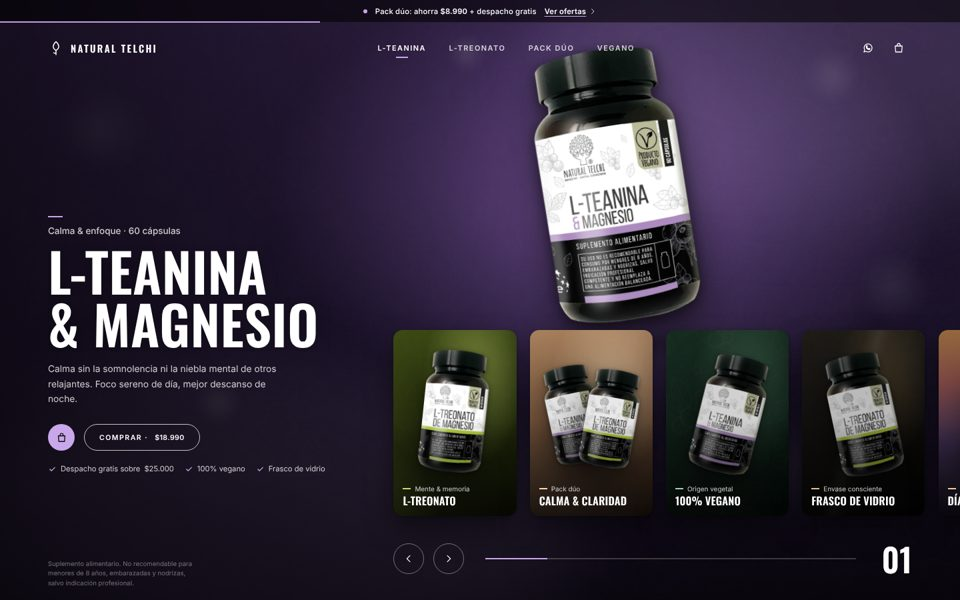
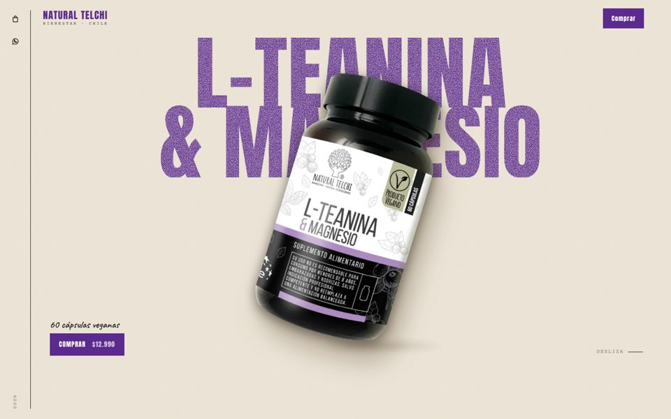
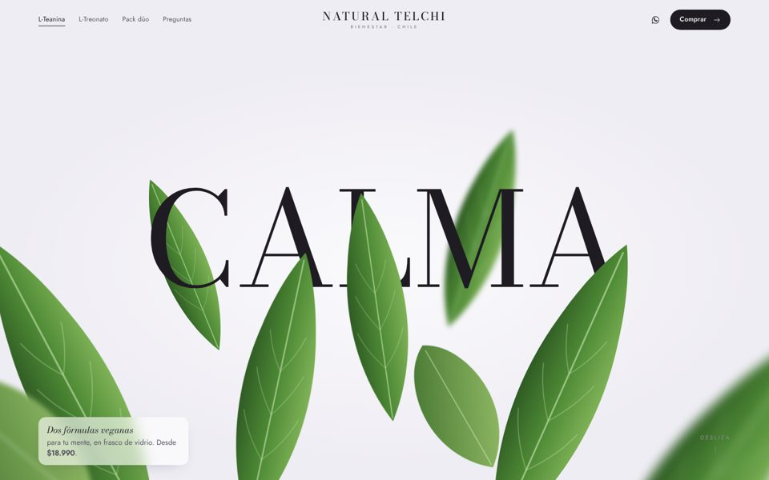

Preparé estas páginas para mostrar cómo Natural Telchi podría captar clientes con campañas en redes sociales: cada una presenta los productos de forma atractiva y lleva a la persona directo a comprar. Funcionan en celular y computador.

Una sola pantalla con escenas a pantalla completa. Ideal como portada de una campaña de marca.
Ver landing →
Para un solo producto: el frasco acompaña el recorrido y termina en la compra. Hecha para L-Teanina & Magnesio.
Ver landing →
Presenta L-Teanina y L-Treonato, ayuda a elegir y destaca el pack dúo para subir el valor de cada venta.
Ver landing →Precios y textos de referencia: al conectar con la tienda se actualizan automáticamente.